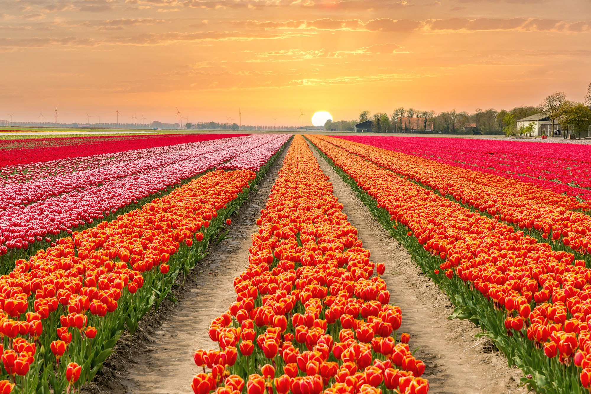

The Warm Season after the Cold Season!

Spring is the season that I believe most people look forward to. It is right after winter and the weather starts getting warmer and flowers start to bloom again. I know that I look forward to spring after winter because it means that school is almost done and summer is right around the corner.